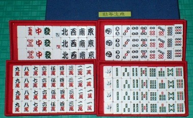

歌舞伎をやるとなると、芝居小屋の軒下に役者の名前を板に書いたものをずらりと並べる。このときの書体が勘亭流と呼ばれる丸みをおびた独特の書体（歌舞伎文字とも呼ばれる）。
そして名前の書かれた板を軒下に並べ挙げることを「まねき上げ」と云う。たぶん、「まねき」というのは、「客をまねく＝大入りを願う」という意味なんだろう。
※中日新聞１１月８日朝刊より。
そして今回 紹介する牌は、彫りをその勘亭流の書体としたもの。とうぜん近年の日本製であるが、麻雀牌の彫り師もいなくなった現在、変わり種の牌が作られることは少なくなった。そこで珍しいと云えば、もちろん珍しい。ではどこで彫られたのかと云えば、ココでも紹介した用具販売店・市川屋のレーザー彫刻による製品である。

勘亭流といっても索子は字ではないから何とも言えない。しかし字牌や萬子はたしかに勘亭スタイル、筒子も勘亭流の「の」の字だ。さすがレーザー、彫りはすべて均一であるが、１索のデキが特に素晴らしい。手彫りでは、とてもこのような繊細な彫刻は不可能だ。
いずれにしても勘亭流風味の図柄というだけでも珍しいが、この牌のウリはもう一つある。PCによるレーザー彫刻なら、データさえ保存しておけば百セットでも千セットでも同一製品が製造可能である。しかしインターネットの惹句にある通り、これと同一のセットは、最初に造られた２４セット以後、製造されない可能性が大いにある。それはたぶん手違いのせいと思われるが、 の図柄が通常と逆だからである。そして２４セット作ったところで間違いに気づいたんじゃないかと思う次第.... の図柄が通常と逆だからである。そして２４セット作ったところで間違いに気づいたんじゃないかと思う次第....
云うまでもなく伝統的なのデザインは、上がＷで下がＭ。要するにウインドウズがマッキントッシュを押さえつけている....しかしこの勘亭流牌はマッキントッシュがウインドウズを押さえつけている。まさにマック派が見たら嬉し涙ボロボロという代物（^-^）
は、その発音から俗に「パンツ」とも呼ばれるが、「蟹（かに）」という俗称もある。これは見た目が蟹がハサミを振り上げている形に似ているからだろう。そこでを摩牌することを、「蟹の腹をなでる」ともいう。じっさいの真ん中の◇の形は、蟹の腹とよく似ている。しかしＭが上になっていたのでは、蟹の腹をなでようがない。（笑）
いずれにしたって、間違いとはいえ逆８索は面白い。そこで勘亭流もさることながら、つい買う気になった。現在、市川屋でもサイトでも定価¥29,000-で販売されているし、ときどきヤフーオークションでも出品されている。
|